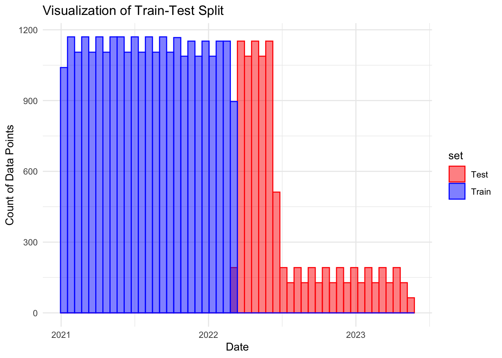

I aim to assess if the administration of the COVID-19 vaccine is associated with its manufacturer. I will examine whether or not certain manufacturers had a greater number of administered doses. –> already ran EDA to determine whether or not certain manufacturers had greater numbers of administered doses, now I will try models to determine if COVID-19 vaccine administration is associated with its manufacturer
I will also assess whether or not the administration of the COVID-19 vaccine is associated with the administration of the flu vaccine by looking at the number of doses of the vaccines administered in the same year. –> completed in previous “project-analysis.qmd” file (time series and granger causality)
Setup
Loading in any packages that may be needed.
library(readxl) #for loading Excel fileslibrary(dplyr) #for data processing/cleaning
Attaching package: 'dplyr'
The following objects are masked from 'package:stats':
filter, lag
The following objects are masked from 'package:base':
intersect, setdiff, setequal, union
library(tidyr) #for data processing/cleaninglibrary(skimr) #for nice visualization of data library(here) #to set paths
here() starts at /Users/nataliecann/Desktop/MADA/Cann-MADA-project
library(ggplot2) # for graphslibrary(kableExtra) # for tables
Attaching package: 'kableExtra'
The following object is masked from 'package:dplyr':
group_rows
library(readr) # for reading in csv fileslibrary(purrr)library(lubridate) # for dealing with dates
Attaching package: 'lubridate'
The following objects are masked from 'package:base':
date, intersect, setdiff, union
library(tibble)library(yardstick)
Attaching package: 'yardstick'
The following object is masked from 'package:readr':
spec
I will now split the data into training and testing sets. I will split the data into a 75% train (3/4) and 25% test set (1/4). I cannot split the data randomly since it is based on time-series.
# set seed for reproducibilityset.seed(123)# COVID-19 VAX DATAsplit_index_covid <-floor(0.75*nrow(covid_vaccine_combined)) # 75% cutoffcovid_train <- covid_vaccine_combined[1:split_index_covid, ] # Training set (older data)covid_test <- covid_vaccine_combined[(split_index_covid +1):nrow(covid_vaccine_combined), ] # Test set (newer data)# FLU VAX DATAsplit_index_flu <-floor(0.75*nrow(flu_vaccine_combined)) # 75% cutoffflu_train <- flu_vaccine_combined[1:split_index_flu, ] # Training set (older data)flu_test <- flu_vaccine_combined[(split_index_flu +1):nrow(flu_vaccine_combined), ] # Test set (newer data)## ENSURING SPLIT OCCURRED CORRECTLY# Ensure the Date column is in Date format if not alreadycovid_vaccine_combined$Date <-as.Date(covid_vaccine_combined$Date)# Add a column to indicate whether the row is part of the training or test setcovid_vaccine_combined$set <-ifelse(covid_vaccine_combined$Date <= covid_vaccine_combined$Date[split_index_covid], "Train", "Test")# Plot the distribution of dates for both train and test setsggplot(covid_vaccine_combined, aes(x = Date, color = set)) +geom_histogram(data = covid_vaccine_combined, aes(x = Date, fill = set), bins =50, position ="identity", alpha =0.5) +labs(title ="Visualization of Train-Test Split",x ="Date",y ="Count of Data Points") +theme_minimal() +scale_color_manual(values =c("Train"="blue", "Test"="red")) +scale_fill_manual(values =c("Train"="blue", "Test"="red"))

It looks like the data was split correctly, with roughly 75% of the data in the training set and 25% in the testing set.
Linear Regression Model with Train Data for COVID-19 Vaccine
I will now do a linear reg model predicting the number of covid-19 vaccines administered with Date and manufacturer as predictors (Administered_Janssen, Administered_Moderna, Administered_Pfizer, Administered_Novavax). I will use the train data created above.
# convert Date to numeric for regressioncovid_train$Date_numeric <-as.numeric(covid_train$Date)covid_test$Date_numeric <-as.numeric(covid_test$Date)# fit the linear reg model to the train datacovid_lm <-lm(Administered ~ Administered_Janssen + Administered_Moderna + Administered_Pfizer + Administered_Novavax + Administered_Unk_Manuf, data = covid_train)# summary of linear reg modelsummary(covid_lm)
Call:
lm(formula = Administered ~ Administered_Janssen + Administered_Moderna +
Administered_Pfizer + Administered_Novavax + Administered_Unk_Manuf,
data = covid_train)
Residuals:
Min 1Q Median 3Q Max
-3.652e-05 1.000e-09 1.000e-09 2.000e-09 1.581e-06
Coefficients: (1 not defined because of singularities)
Estimate Std. Error t value Pr(>|t|)
(Intercept) -4.137e-08 1.354e-09 -3.055e+01 <2e-16 ***
Administered_Janssen 1.000e+00 8.419e-15 1.188e+14 <2e-16 ***
Administered_Moderna 1.000e+00 9.761e-16 1.024e+15 <2e-16 ***
Administered_Pfizer 1.000e+00 7.545e-16 1.325e+15 <2e-16 ***
Administered_Novavax NA NA NA NA
Administered_Unk_Manuf 1.000e+00 8.538e-14 1.171e+13 <2e-16 ***
---
Signif. codes: 0 '***' 0.001 '**' 0.01 '*' 0.05 '.' 0.1 ' ' 1
Residual standard error: 2.199e-07 on 28007 degrees of freedom
Multiple R-squared: 1, Adjusted R-squared: 1
F-statistic: 2.946e+32 on 4 and 28007 DF, p-value: < 2.2e-16
# predict on test datacovid_predictions <-predict(covid_lm, newdata = covid_test)
Warning in predict.lm(covid_lm, newdata = covid_test): prediction from
rank-deficient fit; attr(*, "non-estim") has doubtful cases
Warning: Removed 3 rows containing missing values or values outside the scale range
(`geom_point()`).
The RMSE appears to be VERY high (143707237506), indicating that this model did not work well. However, the R-squared is one. For some reason I cannot get the graph to show the diagonal line - there appears to be lots of clustering.
Since the RMSE was VERY high, I will now try to use cross-validation to see if the model can be improved.
# Set up cross-validationcv_model <-train(Administered ~ Administered_Janssen + Administered_Moderna + Administered_Pfizer + Administered_Novavax + Administered_Unk_Manuf, data = covid_train, method ="lm", trControl =trainControl(method ="cv", number =10))# View RMSE from cross-validationprint(cv_model)
Linear Regression
28012 samples
5 predictor
No pre-processing
Resampling: Cross-Validated (10 fold)
Summary of sample sizes: 25210, 25212, 25212, 25211, 25212, 25212, ...
Resampling results:
RMSE Rsquared MAE
1.915258e-07 1 8.450032e-08
Tuning parameter 'intercept' was held constant at a value of TRUE
# Check for missing values in covid_testsum(is.na(covid_test))
[1] 382
# Remove rows with missing values in covid_testcovid_test_clean <- covid_test %>%drop_na() # 382 NAs --> drop the NAs# Make predictions on the cleaned test datapredictions <-predict(cv_model, newdata = covid_test_clean)
Warning in predict.lm(modelFit, newdata): prediction from rank-deficient fit;
attr(*, "non-estim") has doubtful cases
# Ensure the number of rows matchif (nrow(covid_test_clean) ==length(predictions)) { covid_test_clean$predicted <- predictions} else {stop("Mismatch in the number of rows between test data and predictions.")}# Create a tibble for observed and predicted valuescovid_results <-tibble(truth = covid_test_clean$Administered,estimate = covid_test_clean$predicted)# Plot observed vs predicted valuesggplot(covid_results, aes(x = truth, y = estimate)) +geom_point(alpha =0.6, color ="lightpink") +geom_abline(slope =1, intercept =0, color ="gray") +labs(title ="Cross-Validated Linear Regression: Observed vs Predicted \n COVID-19 Vaccine Administration",x ="Observed Administered",y ="Predicted Administered") +theme_minimal() +theme(plot.title =element_text(hjust =0.5, face ="bold", size =16) )
The RMSE is now VERY low (1.915258e-07). This jump from such a high to such a low RMSE is surprising. The R-squared is 1. I believe that overfitting is occurring here. Additionally, we see that the predictions are VERY close to the observed values, which is not realistic (they are practically on the diagonal line). There appears to be clustering of around the upper and lower regions of the diagonal line.
I will try using LASSO to reduce the issue of overfitting.
# Try using Lasso Regression (L1 regularization)cv_model_lasso <-train(Administered ~ Administered_Janssen + Administered_Moderna + Administered_Pfizer + Administered_Novavax + Administered_Unk_Manuf, data = covid_train, method ="glmnet", trControl =trainControl(method ="cv", number =10))# View RMSE from cross-validationprint(cv_model_lasso)
glmnet
28012 samples
5 predictor
No pre-processing
Resampling: Cross-Validated (10 fold)
Summary of sample sizes: 25212, 25212, 25211, 25210, 25212, 25211, ...
Resampling results across tuning parameters:
alpha lambda RMSE Rsquared MAE
0.10 90161.42 1399478 0.9991458 504793.1
0.10 901614.19 1399478 0.9991458 504793.1
0.10 9016141.88 3944103 0.9965338 1457943.3
0.55 90161.42 1382143 0.9994996 454183.4
0.55 901614.19 1382143 0.9994996 454183.4
0.55 9016141.88 6241747 0.9984940 1938351.1
1.00 90161.42 1314505 0.9999938 365837.0
1.00 901614.19 1314505 0.9999938 365837.0
1.00 9016141.88 9010868 0.9999792 2514859.6
RMSE was used to select the optimal model using the smallest value.
The final values used for the model were alpha = 1 and lambda = 901614.2.
# Check for missing values in covid_testsum(is.na(covid_test))
[1] 382
# Remove rows with missing values in covid_testcovid_test_clean <- covid_test %>%drop_na() # because we have 382 NAs# Make predictions on the cleaned test datapredictions <-predict(cv_model_lasso, newdata = covid_test_clean)# Ensure the number of rows matchif (nrow(covid_test_clean) ==length(predictions)) { covid_test_clean$predicted <- predictions} else {stop("Mismatch in the number of rows between test data and predictions.")}# Create a tibble for observed and predicted valuescovid_results <-tibble(truth = covid_test_clean$Administered,estimate = covid_test_clean$predicted)# Plot observed vs predicted valuesggplot(covid_results, aes(x = truth, y = estimate)) +geom_point(alpha =0.6, color ="#ffc34d") +geom_abline(slope =1, intercept =0, color ="gray") +labs(title ="LASSO Regression: Observed vs Predicted COVID-19 \n Vaccine Administration",x ="Observed Administered",y ="Predicted Administered") +theme_minimal() +theme(plot.title =element_text(hjust =0.5, face ="bold", size =16) )
The lowest RMSE value was 1314505, indicating the average magnitude of the prediction errors. The highest R-squared value was 0.9999938, indicating that the model explains almost all the variance in the dependent variable. The LASSO regression model with alpha = 1 and lambda = 901614.2 provided the best performance, with very high R-squared values and relatively low RMSE and MAE values. The model is highly accurate in predicting the number of COVID-19 vaccines administered based on the manufacturer variables. There appears to be clustering of around the upper and lower regions of the diagonal line.
Now, I will try using random forest modeling.
# Define the RF model (set seed in engine for reproducibility)rf_model <-rand_forest() %>%set_engine("ranger", seed =1234) %>%set_mode("regression")# Define the recipe (preprocessing steps)rf_recipe <-recipe(Administered ~ Administered_Janssen + Administered_Moderna + Administered_Pfizer + Administered_Novavax + Administered_Unk_Manuf + Year, data = covid_train)# Create a workflow (model + recipe)rf_workflow <-workflow() %>%add_model(rf_model) %>%add_recipe(rf_recipe)# Fit the model on the training datarf_fit <- rf_workflow %>%fit(data = covid_train)# Predict on the test datasetrf_predictions <-predict(rf_fit, covid_test) %>%bind_cols(covid_test)# Calculate RMSErf_rmse <- rf_predictions %>%rmse(truth = Administered, estimate = .pred)rf_rmse
# A tibble: 1 × 3
.metric .estimator .estimate
<chr> <chr> <dbl>
1 rmse standard 8550305.
The RMSE is 8550305, which is very high and indicates that there may be errors. The R-squared is 0.9919158. It appears as though the LASSO model and the linear regression with cross-validation performed better than the random forest. There appears to be clustering of around the upper and lower regions of the diagonal line.
Make Table with Graphs Above as well as their RMSEs
Now, I will create a table with the graphs above as well as their RMSEs so that a quick summary can be obtained about the models that were done and how well each one worked.